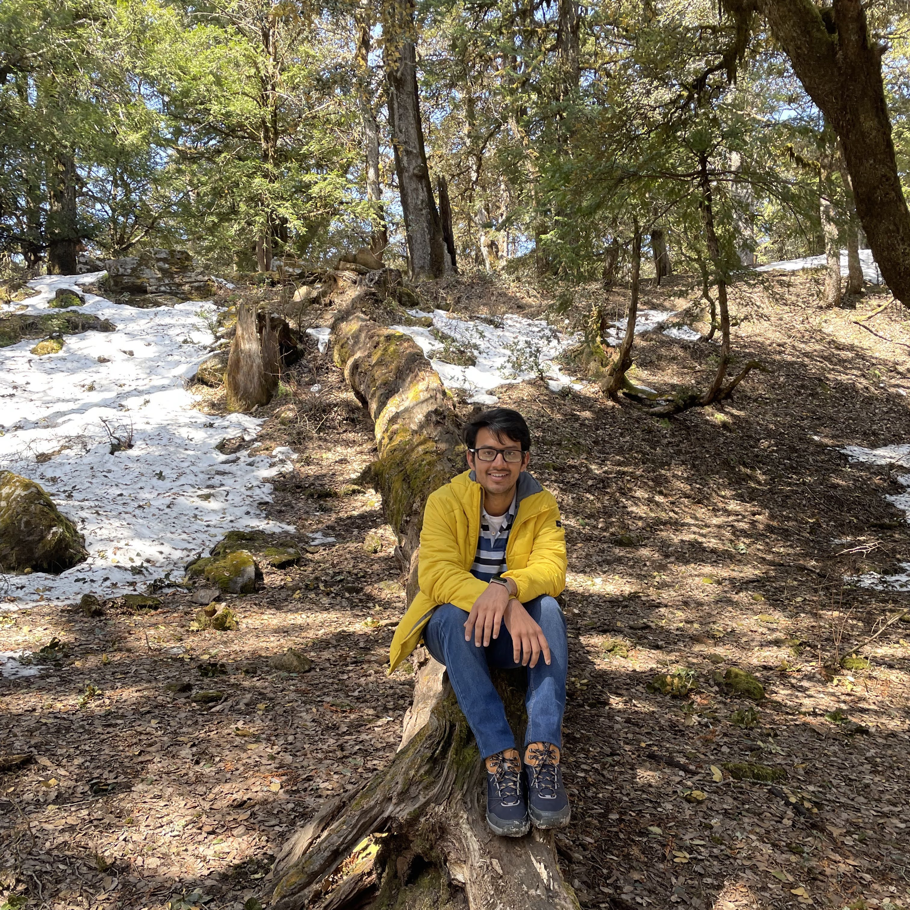

I’m a researcher exploring domains of Artificial Intelligence. My research interests include computer vision, adversarial machine learning, and representation learning.
My primary focus is to build systems that offer true disentangled abstraction of human psychology and challenges human consciousness. I plan to pursue my vision for such systems by extending my approach to reinforcement learning and non-differentiable intelligence.
I have worked on diverse areas of AI during my internships ranging from Keyword Spotting, Multimodal Emotion Recognition to Object Detection and Segmentation
Currently, I’m working as AI scientist at qure.ai where we are applying deep learning on medical images. The goal is to make healthcare affordable while maintaining efficieny and effecttiveness.